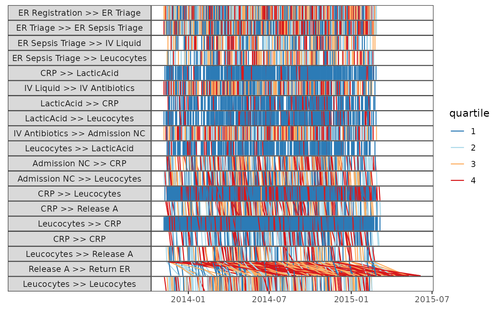

Plots the detailed performance spectrum. The performance spectrum describes the event data in terms of segments, i.e., pairs of related process steps. The performance of each segment is measured and plotted for any occurrences of this segment over time and can be classified, e.g., regarding the overall population. The detailed performance spectrum visualises variability of durations in a segment across cases and time (Denisov et al., 2018). See References for more details.
Usage
ps_detailed(
log,
segment_coverage,
n_segments,
classification = NULL,
scale = NULL
)
# S3 method for log
ps_detailed(
log,
segment_coverage,
n_segments,
classification = NULL,
scale = NULL
)
# S3 method for grouped_log
ps_detailed(
log,
segment_coverage,
n_segments,
classification = NULL,
scale = NULL
)Arguments
- log
log: Object of classlogor derivatives (grouped_log,eventlog,activitylog, etc.).- segment_coverage, n_segments
numeric: Provide eithersegment_coverageorn_segments. If neither is provided,segment_coverage = 0.2will be used.segment_coverage: The percentage of cases (default0.2) in which each segment must be present to be visualised in the spectrum. Ignored ifn_segmentsis specified.n_segments: Visualise only the topnsegments based on frequency.- classification
character(defaultNULL): The variable defining the colour legend. This variable should be present inlog.
IfNULL(default) whenlogis agrouped_log, the first grouping variable will be used asclassification.
IfNULL(default) or"quartile"whenlogis aneventlogoractivitylog, a quartile variable dividing the durations of the segments in quartiles is calculated.- scale
ggplot2scale function (defaultscale_color_discrete_bupaR): Set color scale. Defaults toscale_color_discrete_bupaR.
Methods (by class)
ps_detailed(log): Plot detailed performance spectrum for alog.ps_detailed(grouped_log): Plot detailed performance spectrum for agrouped_log.
References
Denisov, V., Fahland, D., & van der Aalst, W. M. P. (2018). Unbiased, Fine-Grained Description of Processes Performance from Event Data. In M. Weske, M. Montali, I. Weber, & J. vom Brocke (Eds.), Proceedings of the 16th International Conference on Business Process Management (Vol. 11080, pp. 139–157). Springer International Publishing. doi:10.1007/978-3-319-98648-7_9
Examples
# \donttest{
library(psmineR)
library(eventdataR)
sepsis %>%
ps_detailed(segment_coverage = 0.2,
classification = "quartile")

# }